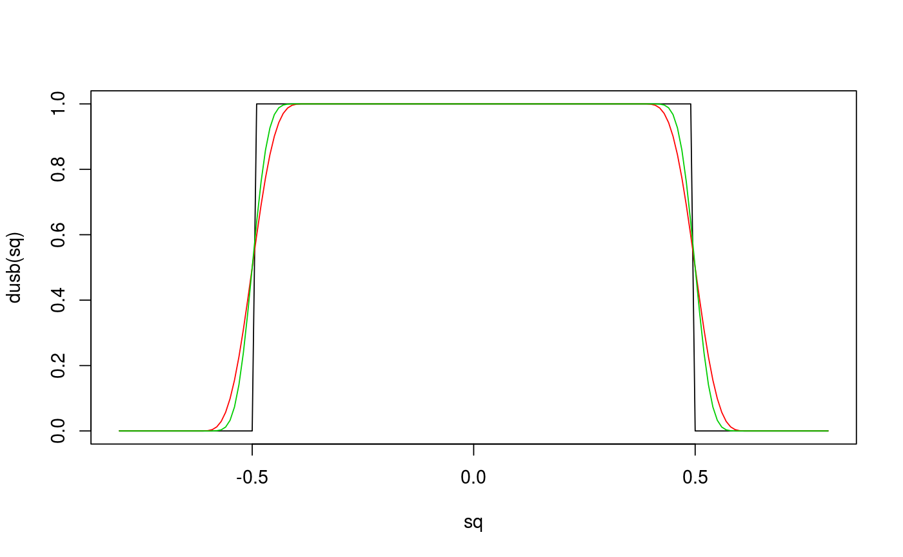

The uniform scaled beta (USB) distribution describes the distribution of the random variable $$U_{b, \nu} = U + \theta(B - 0.5),$$ where \(U\) is a \(U[-0.5, 0.5]\) random variable, \(B\) is a \(Beta(\nu, \nu)\) random variable, and \(theta > 0, \nu >= 1\).
dusb(x, theta = 0, nu = 5) rusb(n, theta = 0, nu = 5, quasi = FALSE)
| x | vector of quantiles. |
|---|---|
| theta | scale parameter of the USB distribution. |
| nu | smoothness parameter of the USB distribution. |
| n | number of observations. |
| quasi | logical indicating whether quasi random numbers
( |
Nagler, T. (2017). A generic approach to nonparametric function estimation with mixed data. arXiv:1704.07457
# plot distribution sq <- seq(-0.8, 0.8, by = 0.01) plot(sq, dusb(sq), type = "l")lines(sq, dusb(sq, theta = 0.25), col = 2)lines(sq, dusb(sq, theta = 0.25, nu = 10), col = 3)# simulate from the distribution x <- rusb(100, theta = 0.3, nu = 0)